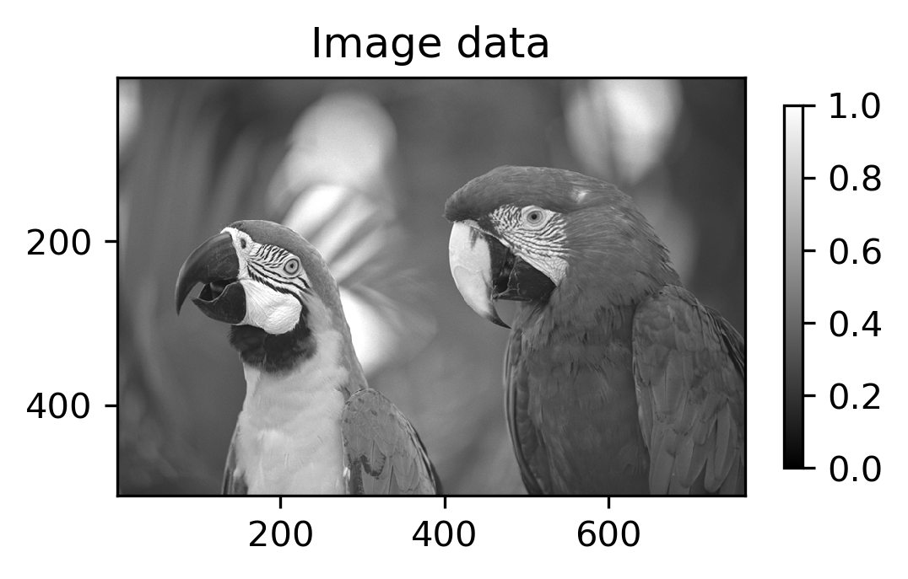
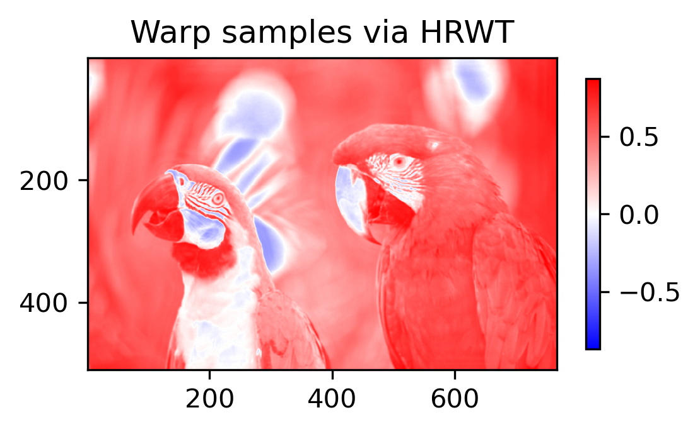
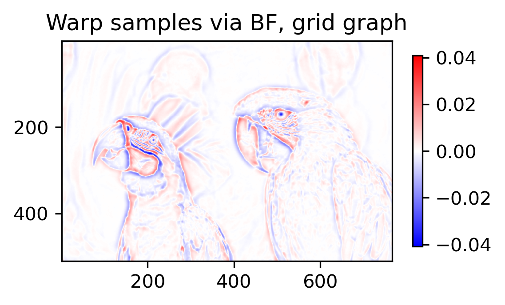

In this demo, we create warp maps from 1) the Higher-order Riesz-wavelet transform, and 2) the Bernstein filtering (BF) method on an unit grid graph.
Setup
Install dependencies
import Pkg
let
pkgs = ["LazyGPR", "PythonPlot", "VisualizationBag", "Images", "SpatialGSP"]
for pkg in pkgs
if Base.find_package(pkg) === nothing
Pkg.add(pkg)
end
end
end;
import Random
Random.seed!(25)
using LinearAlgebra
using StaticArrays
import LocalFilters
import Images
import SpatialGSP as GSP
import RieszDSP as RZ
import LazyGPR as LGP
import VisualizationBag as VIZ
import PythonPlot as PLT
PLT.close("all")
fig_num = 1
const T = Float64
const D = 2;The following helper scripts can be found in examples/helpers/ from the root repository folder.
include("helpers/utils.jl")
include("helpers/image.jl")load_kodak_region (generic function with 1 method)User inputs
#where the results are saved.
save_results_dir = "output/"
if !ispath(save_results_dir)
mkpath(save_results_dir)
end
#pics_folder = joinpath(homedir(), "work/data/images/kodak/")
pics_folder = "data/"
image_path = joinpath(pics_folder, "kodim23.png")
img = loadkodakimage(T, image_path; discard_pixels = 1)
x_nD, x_ranges = image2samples(img)
sz_x = size(x_nD);The positions for each pixels. This is a grid, so we represent it as a tuple of range data types.
Xrs = (1:size(x_nD,1), 1:size(x_nD,2))
im_y = x_nD;Construct Warp Samples
Warp samples from RieszDSP.jl
W_rz = LGP.create_grid_warp_samples(LGP.UseRieszDSP(RZ), im_y)
σr = 0.5
σs = 1.0
W_rz = LocalFilters.bilateralfilter(
W_rz, σr, σs, 2*round(Int,3*σs)+1,
);Bernstein filtering, grid graph.
warp_config = GSP.WarpConfig{T}()
W_grid = LGP.create_grid_warp_samples(
LGP.UseSpatialGSP(GSP),
im_y,
warp_config,
);
W_grid = LocalFilters.bilateralfilter(
W_grid, σr, σs, 2*round(Int,3*σs)+1,
);Compare Warp Samples
fig_size = VIZ.getaspectratio(size(im_y)) .* 4
dpi = 300;Input image.
fig_num = VIZ.plotmeshgrid2D(
PLT,
collect(Xrs),
im_y,
[],
"x",
fig_num,
"Image data";
cmap = "gray",
vmin = 0,
vmax = 1,
horizontal_title = "",
vertical_title = "",
matrix_mode = true,
color_bar_shrink = 0.7,
fig_size =fig_size = fig_size,
dpi = dpi,
)
PLT.gcf()
Warp samples using the Higher-order Riesz-wavelet transform.
fig_num = VIZ.plotmeshgrid2D(
PLT,
collect(Xrs),
W_rz,
[],
"x",
fig_num,
"Warp samples via HRWT";
cmap = "bwr",
symmetric_color_range = true,
horizontal_title = "",
vertical_title = "",
matrix_mode = true,
color_bar_shrink = 0.7,
fig_size = fig_size,
dpi = dpi,
)
PLT.gcf()
Warp samples from Bernstein filtering. unit grid graph.
fig_num = VIZ.plotmeshgrid2D(
PLT,
collect(Xrs),
W_grid,
[],
"x",
fig_num,
"Warp samples via BF, grid graph";
cmap = "bwr",
symmetric_color_range = true,
horizontal_title = "",
vertical_title = "",
matrix_mode = true,
color_bar_shrink = 0.7,
fig_size = fig_size,
dpi = dpi,
)
PLT.gcf()
This page was generated using Literate.jl.